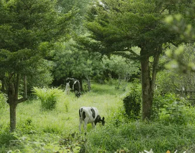

Gastronomy Trail & Visit
-Our Preferred Choice & Advocacy
“A Collection of Unique Territorial Assets, Presenting Artistically and Sustainably through Gastronomy Experiences”
Welcome to an immersive culinary adventure that will take you on a gastronomic journey like no other. The Gastronomy Trail and Visit is your ticket to exploring the rich, diverse, and delectable world of food and flavors in a way that tantalizes your taste buds and piques your curiosity.
This unique experience is designed for food enthusiasts, culinary explorers, and anyone who appreciates the cultural significance of food. Join us as we uncover the hidden gems of local cuisine, artisanal delicacies, and the stories behind the dishes that define a region's identity.
